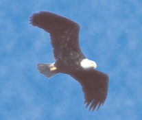

EAGLE PHOTOGRAPHS ? GREGORY K. SCOTT-PHOTO RESEARCHERS, INC.
The wings of a ""baldie"" span over feet and easily carry the birds weight of eight to 14 pounds. It's feet, eyes, and large bill are yellow.